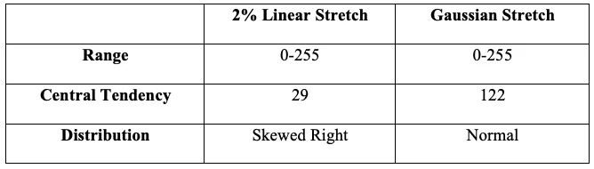

UCLA coursework, 2014 to 2018
Active Remote Sensing: Interpolation & Analysis of SAR Imagery
Analysis of SAR Images & LiDAR Data - Applications of a Gaussian Contrast Stretch

This project emphasizes the strength in Active Remote Sensing - satellites capable of generating their own source of energy through electromagnetic radiation. The use of interpolation and analysis of SAR (Synthetic-aperture Radar) was used to obtain latitudinal and longitudinal coordinates for the image center.
The application of a 'Gaussian Contrast Stretch' was used on the original image, which adds a gray filter to make darker pixels appear brighter and show less contrast. These contrasting representations of the same image highlight the basics of interpreting satellite imagery of urban centers. Rivers appear darker because a large portion of the radar's energy is being reflected away from the sensor - the flat surface acting like a mirror. Buildings, on the other hand, appear almost overwhelmingly bright. This common occurrence is often referred to as the "Corner Reflection Effect." When two smooth surfaces form a 90° angle that faces the beam shot from active satellites, it's as if twice the energy is being reflected off the object and reflected back to the sensor.

Histograms are useful graphic representations for remotely sensed images, because they allow for the analysis of a single band. Analyzing the input and output histograms from the Gaussian Contrast image (left) to the original image (right) allows for a heightened understanding of 3 statistical variables: Range, Central Tendency, and Distribution. In the realm of remote sensing, the Range refers to frequency of pixels and is always a value between 0 and 255. The Central Tendency is represented as a single value that denotes an entire dataset by its center. In this case, the Central Tendency for the Gaussian Stretch image is 122, while the 2% Linear Stretch of the original image is 29. The Distribution of the Gaussian Stretch image appears normal, while the 2% Linear Stretch of the original image is skewed to the right.